You need password to access to the content, go to Slack *#phdsukai to find more.
Part of this article is encrypted with password:
[TOC]
Thesis Structure Plan#
-
In our research, we start with an investigation of the extent to which the task-dependent natural language information can assist in the decision making process of learning-based agents. Specifically, we will present several methods to improve utilisation of the language information based on the existing approaches. Improving utilisation means we want to improve learning agent’s efficiency and generalisation performance with the use of language information. (This will become one chapter (Chapter A) in my PhD thesis)
-
After we present techniques for improving language-assisted learning agents to surpass baseline (i.e., Goyal’s model) in terms of efficiency and generalisation performance (in Chapter A), I will continue to conduct an empirical study to investigate how natural language understanding ability influences the learning process of agent. And we expect that this investigation will give us a solid justification why we want to have a natural language understanding agent for solving complex tasks, which I think we currently lack such a justification. The preliminary ideas can be found here. (This will become one chapter (Chapter B) in my PhD thesis)
-
Chapter A will treat the language information as having a unified level of abstraction. So in a new chapter (Chapter C), we will investigate the effect of various granularity of language information in training agents (we expect some observations:
- Models that are good at handling low-level language information (these models will be the products of Chapter A) may face difficulty handling abstract language information (agent may require longer training time or even fail to converge).
- Agents that are trained to utilise abstract language may have better the generalisation performance.
After the above investigation, we will investigate the approaches that will decrease the agent’s training time when utilising abstract language data. Moreover, we will present a model that can automatically handle both low level and high level language information (e.g., includes general guides in the Manual book and low-level walkthrough for specific game level) to solve the game task. The preliminary ideas can be found here.
But for Chapter A stuffs, I want to give you my own opinions about what are types of ways to improve existing approaches. It is because later I will categorise my proposed methods of improving existing language assisted learning agents into these types.
In a broader perspective, what are the types of ways to improve existing approaches#
- Re-design Model Architecture
- Aim: capture the inductive bias of the input in a better way
- E.g., Why CNN (e.g., VGG net) is good for image classification task
- Reason: translation invariance property of image classification is captured by CNN model.
- What is translation invariance: class of object won’t change no matter the object is at which position of the image.
- Reason: translation invariance property of image classification is captured by CNN model.
- Preprocess the input
- Aim: pre-processing of input is a concrete approach based on divide and conquer principle – we let the model to focus on fewer tasks rather than all-in-one, and by doing this, the model (neural network) can converge faster
- E.g., Preprocessing of the text tokens into semantic embeddings using pre-trained model is helpful for downstream NLP tasks
- Modify the training process
- Aim: leads to a more effective learning
- E.g., Contrastive learning technique is about to generate lots of different types of negative samples to train the model
- Consequence: the model is able to learn such an embedding space in which dissimilar sample pairs are far apart. And this embedding space is more effective to captures the semantic meaning
- Include data augmentation and pre-trained model
- Aim: generate more training data and also transfer sharable knowledge from pre-trained model.
- This is a task-agnostic and model-agnostic technique to improve the performance.
Later I will categorise my proposed methods into these types. But before we do that, let’s recall the existing agent structure that handles language information
Structure of language assisted learning agent#
Let’s recall the structure of language assisted learning agent
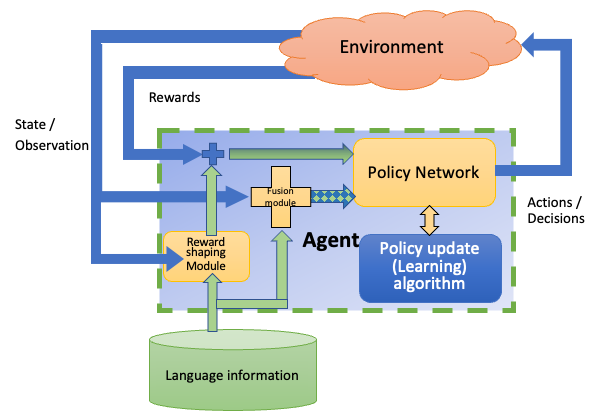
Here are some delimitations:
- We express the problem in MDP format.
- Reason: we just want to stick to the convention because games in OpenAI gym environment, Atari Learning environment and also NetHack learning environment are expressed in MDP format.
- the goal of learning agent is to
- Maximise the accumulated reward it can get in one episode
- If the goal state of the game is stated, then the agent should reach goal state of the game using minimum steps
- Reason: there is no goal state required in vanilla MDP expression, but in video games there is usually a goal (e.g., escape the current level)
In our study (Chapter A), we will focus on three components of the agent
-
reward shaping module
-
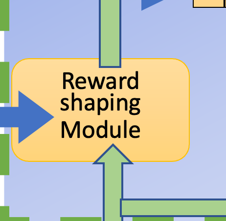
-
The role of reward shaping module: give rewards according to whether the past observations meet the expectation.
-
To be more specific, it will give rewards if the agent follows the instruction or obeys the guides
-
(Advanced) it will also give rewards if the agent concretises abstract information into a good decision (a good decision means expert player will also deduce this decision based on the message) (will also be investigated in Chapter C)
-
e.g., in NetHack guidebook Weapon section, it says
-
“You need weapons for self-defense. Monk characters are an exception; they normally do more damage with bare (or gloved) hands than they do with weapons.”
-
-
Reward should be given if agent decide not to wield a weapon when they play Monk character.
-
-
-
-
fusion module
-
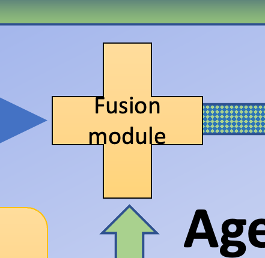
- The role of fusion module: fuse observation and language into a unified multimodal representation
- common expectations of the fusion:
- condense -> smaller multimodal space dimension to avoid the curse of dimensionality
- robust -> is able to capture the semantic meaning even if some associated unimodal information is masked/missing.
- accurate -> the multimodal representation is able to capture accurate semantic meaning of the original unimodal data.
-
-
policy module
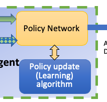
- The role of policy module: train a policy network that can correctly handle the incoming observations and reward signals so as to output a sequence of actions that solves the task.
Now let’s see what directions we have to improve the agent based on these three components and their roles.
Directions of improvement.#
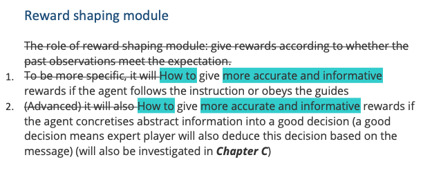
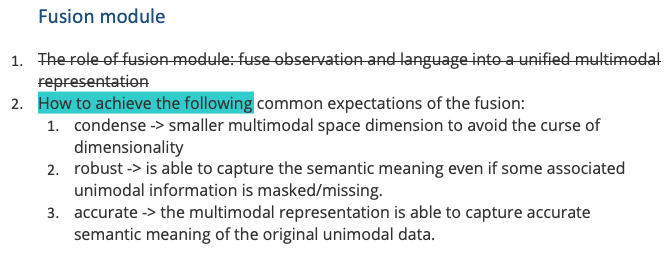
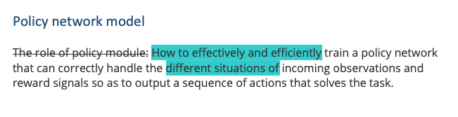
To what extent the task-dependent natural language information can assist in the decision making process of learning-based agents? To answer this question, we form the following sub-questions based on the roles of reward shaping module, fusion module and policy network module in the language-assisted learning agent and then propose methods for the questions:
Reward shaping part
-
How to give more accurate and informative rewards when the agent follows the instruction or obeys the guides?
-
Re-design Model Architecture
-
- State-aware reward shaping module (See Section 3.1 in confirmation report)
- Motivation: past observation (state) information is better than past actions in terms of inferring the agent’s behaviour. Therefore, a state-aware reward shaping module is capable of making more accurate prediction on whether the agent followed the instruction.
- State-aware reward shaping module (See Section 3.1 in confirmation report)
-
Pre-process the input
-
- Converting image pixel into latent vector using Intra-cross attention masked learning (similar to BERT) (See Section 3.1.1 in confirmation report)
- Motivation: allowing the image feature vector to capture the temporal ordering information
- Converting image pixel into latent vector representation from pretrained object recognition model (soft-discretisation process) (See Section 3.1.2 in confirmation report)
- Motivation: allowing the reward shaping module to conduct reasoning process on the object level rather than pixel level.
- Converting language instruction into Linear Temporal Logic expression (See Section 3.4 in confirmation report)
- Motivation: explicitly showing the temporal constraints in the natural language and thus the reward shaping module becomes more sensitive to the temporal relationship of events.
- Converting image pixel into latent vector using Intra-cross attention masked learning (similar to BERT) (See Section 3.1.1 in confirmation report)
-
Modify the training process
- Current method: input: two unimodal representations of trajectory and language instruction, output: binary classification output about whether trajectory and instruction are matched.
- Proposed method 1.1 (not mentioned in the confirmation report) : title: treat unimodal data as the projection of the corresponding event onto that modality’s feature space
- Aim: we treat trajectory modality and language instruction modality as different views from an event. Therefore, we train two separate unimodal encoders that will project trajectory and language instruction onto the same event embedding space and use contrastive learning to force the cross-modal encoding output of the same event to be similar (cross-modal similarity) but decrease the intra-modal similarity among different event. Finally, the reward is measured by the similarity score of the encoding vector of the trajectory data and the encoding vector of the language data. (this is inspired from paper multimodal alignment using representation codebook)
- Having an explicit event vector might be helpful to compare the similarity of events: e.g., “avatar killed a skull in room A” vs “avatar killed a skull in room B” even though two observations might be highly different due to different room decorations, the event vector might be similar.
- Motivation 1: introduce the idea of intra-modal similarity score, may increase the robustness
- Motivation 2: we obtain an explicit event vector, which can be directly treated as the fused multimodal representation (which will link to Early fusion part Proposed method 2.1, Thus, the multimodal alignment model and the multimodal fusion model can be the same)
- Proposed method 1.2 (not mentioned in the confirmation report) : design negative rewards based on language information (e.g., agent’s behaviour meets some constraints stated in the walkthrough)
- Motivation: Having more informative reward signal may better help the agent to learn. However, this requires further annotation work.
-
Include data augmentation and pre-trained model (See Section 3.1.4 and Section 3.1.5 in confirmation report)
- Motivation: generating more training data which will help the deep learning model to converge
- Motivation2: transfer knowledge from other domain will also help the model to converge faster.
-
Early fusion part
-
How to achieve a condensed, robust and accurate multimodal representation from multiple unimodal data?
-
Re-design Model Architecture
- Change Attention based fusion model to lightweight fusion model (See Section 3.1.3 in confirmation report)
- Motivation: Attention based fusion model is data-hungry, and we need to avoid that due to lack of annotated training data
- Change Attention based fusion model to lightweight fusion model (See Section 3.1.3 in confirmation report)
-
Modify the training process
- Proposed method 2.1 (not mentioned in the confirmation report) : title: pre-train the fusion model using masked auto encoding learning (i.e., learn to recover missing data), the fusion model will become the encoder in this setting.
- Aim: we can obtain a multimodal representation vector by the autoencoder learning
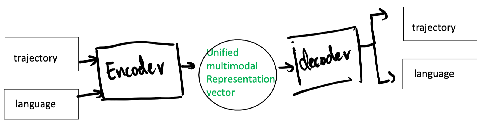
- in order to increase the robustness, we can gradually mask out portions of the input
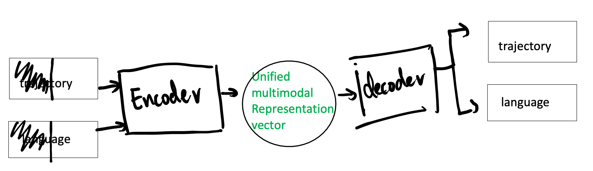
- The autoencoder learning can also train the agent to deduce and induce (which is related to handling abstraction levels of language information (Chapter C), which is not our focus for now)
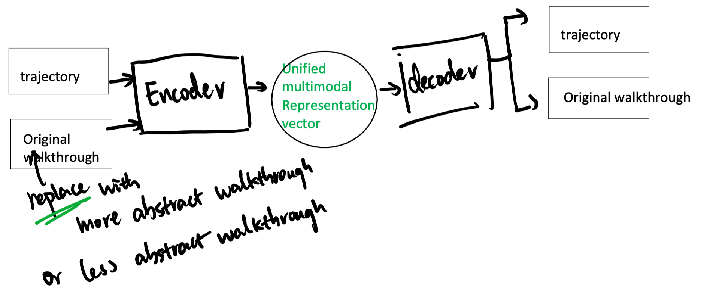
- Aim: we can obtain a multimodal representation vector by the autoencoder learning
- Motivation: this will link back to Proposed method 1.1 . Having this pre-training of the multimodal representation will help to reduce the burden on the policy network.
- Proposed method 2.1 (not mentioned in the confirmation report) : title: pre-train the fusion model using masked auto encoding learning (i.e., learn to recover missing data), the fusion model will become the encoder in this setting.
-
Policy network part
-
How to effectively and efficiently train a policy network that can correctly handle the varieties of incoming observations and reward signals so as to output a sequence of actions that solves the task.
-
Re-design Model Architecture
- Option MDP (See Section 3.5 in confirmation report)
- Motivation: Option MDP may fit the language instruction info quite well
- Memory module (See Section 3.5 in confirmation report)
- Motivation: memory module helps to integrate agent’s observations over time. Therefore, we also plan to construct an extra episodic memory module so as to deal with alignment between long language instruction and long trajectories.
- Option MDP (See Section 3.5 in confirmation report)
-
Modify the training process
- Hindsight Experience Relabelling (See Section 3.3 in confirmation report)
- HER require to translate agent behaviour into natural language descriptions, which we can use Connectionist Temporal Classification (See Section 3.2 in confirmation report)
- Motivation: this helps to train the policy even if the training data is imbalanced (i.e., mainly bad demonstrations)
- Hindsight Experience Relabelling (See Section 3.3 in confirmation report)
-
Some thoughts about learning based agent’s natural language understanding ability#
Statement: the agent will not obtain the natural language understanding ability if the language information only affect the reward signal during training.
Justification: If the natural language only influence the rewards signal, then in the perspective of agent’s policy network, it will only think that the environment is starting to provide more frequent reward signal and the policy network itself has nothing to do with the natural language information.
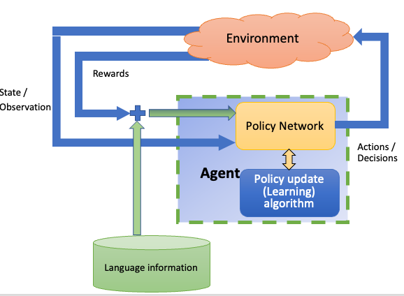
Therefore, if we want to train agent’s natural language understanding ability, we have to apply the early fusion setting
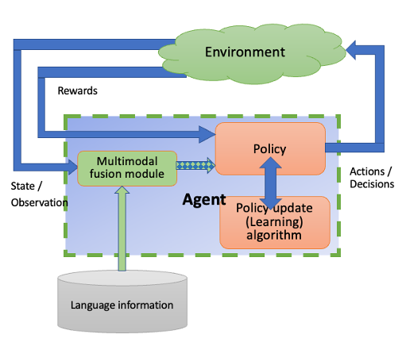
In fact, for a learning agent, we can apply both reward shaping and early fusion simultaneously, and this can be achieved once we apply proposed method 1.1 (title: treat unimodal data as the projection of the corresponding event onto that modality’s feature space) and proposed method 2.1 (title: pre-train the fusion model using masked auto encoding learning) because we can use one module to represent both multimodal fusion module and reward shaping module.
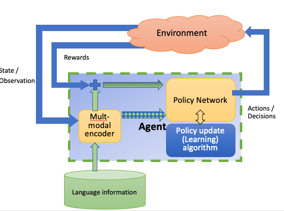
But why we want to train the natural language understanding ability for learning based agent? this will be answered in the thesis Chapter B The preliminary ideas can be found here.